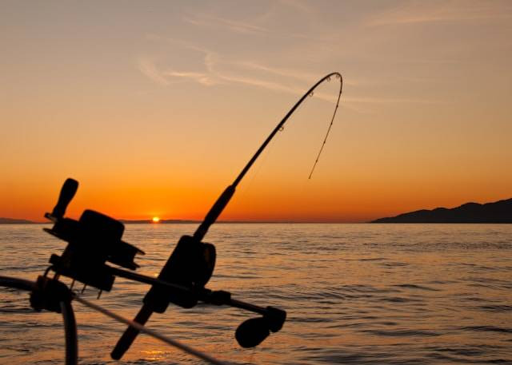

Pengertian Strike Mancing yang Wajib Diketahui Pemula

Mancing merupakan kegiatan menyenangkan sekaligus bisa digunakan untuk mengisi waktu luang.
Bagi pemula yang baru memulai, penting untuk mengetauhi berbagai istilah dalam memancing, salah satunya strike. Kata strike mancing adalah istilah biasanya diucapkan pada saat mendapatkan ikan.
Pengertian Strike Mancing Adalah Sebagai Berikut

Dikutip dari laman resmi BPKP https://www.bpkp.go.id, mancing merupakan kegiatan yang dilakukan seseorang untuk mendapatkan ikan dengan bermodalkan pancing. Pancing adalah seperangkat alat yang terdiri dari beberapa bagian seperti joran, senar dan juga kail.
Memancing merupakan kegiatan yang bisa digunakan untuk mengisi waktu luang dan juga menyalurkan hobi. Mancing juga dapat memberikan manfaat bagi kesehatan mental, termasuk menyediakan waktu untuk relaksasi dan meredakan stress.
Bagi para pemancing momen mendapatkan ikan merupakan momen yang sangat menyenangkan dan memberikan sensasi yang sangat seru. Sensasi tarikan ikan yang kuat dan perjuangan untuk menaklukkannya menjadi pengalaman yang tidak bisa dilupakan.
Di kalangan pemancing ada beberapa istilah yang perlu dipahami, salah satunya adalah istilah strike. Istilah strike mancing adalah momen ketika ikan menelan umpan atau menyentuh kail pancing.
Momen ini ditandai dengan sentakan atau tarikan yang terasa di ujung joran. Strike dapat terjadi dalam berbagai bentuk, mulai dari sentakan ringan hingga tarikan kuat yang langsung mematahkan joran. Hal tersebut tergantung jenis ikan yang memakan umpan.
Faktor yang Memengaruhi Strike Mancing
Ada beberapa faktor yang mempengaruhi strike saat memancing. Berikut ini adalah beberapa di antaranya.
1. Jenis Umpan
Jenis umpan yang digunakan dapat memengaruhi strike yang terjadi. Umpan yang tepat tepat akan membuat peluang strike menjadi lebih besar. Umpan yang tepat juga membuat ikan lebih tertarik dan bisa menghasilkan sentakan yang kuat.
2. Teknik Memancing
Teknik memancing yang digunakan juga dapat memengaruhi strike. Teknik casting biasanya menghasilkan strike yang lebih keras, sedangkan teknik trolling biasanya menghasilkan strike yang lebih lembut.
3. Aktivitas Ikan
Aktivitas ikan juga dapat memengaruhi jenis strike. Ikan yang aktif dan lapar biasanya menghasilkan strike yang lebih keras, sedangkan ikan yang pasif dan tidak lapar biasanya menghasilkan strike yang lebih lembut.
Demikian pembahasan mengenai strike mancing adalah istilah untuk menyebutkan ketika kail di makan ikan.